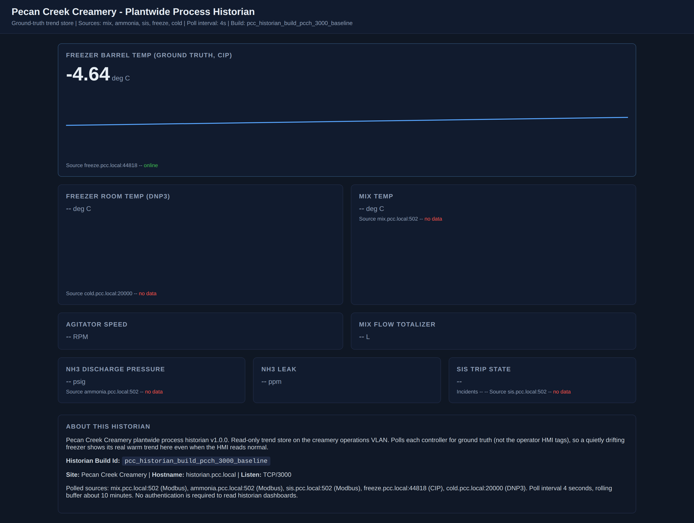
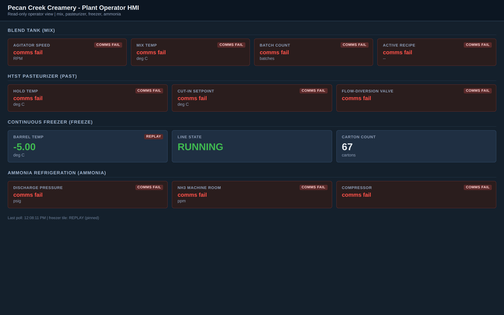

Exercise OTSOC-5.1: The First Hour
Scenario
A freezer line at Pecan Creek Creamery is drifting warm. The creamery historian shows the real barrel temperature climbing while the operator HMI keeps painting a normal minus 5 C. You are the on-call OT incident lead, and you have one hour before the next shift change to run the first hour of this incident without making it worse.
You are a defender. You do not attack, scan, or write to any plant device. Your tools are curl, jq, and python3 on your Kali-based RangeBox, and you use them to read the historian trend, the adversary truth feed, and the staged incident evidence package, then to submit a written decision log to the deliverable grader. Every reachable host in this exercise speaks plain HTTP, so reading them is a safe, passive act.
The hosts in scope for the first hour:
| Host | Role in this incident |
|---|---|
freeze.pcc.local (EtherNet/IP CIP 44818) |
The drifting freezer PLC |
historian.pcc.local (HTTP 3000) |
Creamery trends, shows the truth |
hmi.pcc.local (HTTP 80) |
Operator SCADA, replaying a normal value |
inject.pcc.local (HTTP 8080) |
Adversary control and ground-truth feed |
evidence.pcc.local (HTTP 80) |
The incident evidence package |
rubric.pcc.local (HTTP 80) |
The decision-log grader |
The read-only HMI kiosk account is operator / PecanCreek#2026 if you want to cross-reference the operator view. You do not need it to finish the exercise.
Why this matters
The first hour of an OT incident is where IT muscle memory gets people hurt. An IT analyst who sees a compromised host reaches for the same three moves every time: isolate it, image it, wipe and rebuild it. Run those moves on a live controller and you can drop a safety function, halt a process unsafely, or destroy the only volatile evidence of what the attacker did. OT incident response inverts the IT priority order. Where IT optimizes for confidentiality, integrity, then availability, OT optimizes for safety first, then availability of the process, then integrity of data, with confidentiality last. Safety leads because the consequence of a wrong move is not a data breach, it is ammonia in a packaging hall or a freezer dumping spoiled product into the food supply.
The discipline you build here is the Safe Cyber Position: the minimal set of actions that stops the harm while keeping the process in a known-safe state. A Safe Cyber Position blocks the rogue source path and freezes further engineering writes rather than pulling the PLC or wiping the HMI. The deliverable that matters to the plant is the decision log you write, a defensible record that an after-action review and a regulator can read. The flag you recover at the end is only proof that your reasoning held together.
| Credentials in scope | Username | Password | Where it is used |
|---|---|---|---|
| Operator HMI kiosk | operator |
PecanCreek#2026 |
Optional read-only cross-reference at hmi.pcc.local |
Before You Begin
Every command in the OTSOC track runs on your analysis workstation, a Kali-based RangeBox. You are the incident lead sitting at that workstation; the plant hosts are systems you read across the network. Nothing here runs on a plant device.
After the lab transitions to Running, the Exercise Network panel on the track page lists every target with its IP. These labs set show_target_ips, so you get the exact per-host address instead of just the /24. Read the IPs off the panel rather than hardcoding them, because every student gets a different /24. Capture the hosts you need into shell variables now, then call the variables for the rest of the exercise.
Kali - capture the target IPs from the panel
Confirm the historian answers before you go further, and make it your first triage view. Open the plantwide historian trends dashboard in your browser using the historian IP from the Exercise Network panel on port 3000. The dashboard renders the real freezer barrel-temperature trend, so if it paints, the lab is wired and you are on the network.
Kali - open the historian dashboard in the browser
In your browser address bar, enter the historian IP from the panel on port 3000, for example http://HIST_IP:3000/.

The dashboard is your ground truth: the freezer barrel-temperature trend climbs above its normal minus 5 C while the operator station stays calm. A dashboard that renders with live trends means you are on the network and looking at the real process. A blank page or a hang means the lab is not Running yet, so wait for the panel to show all targets, then reload.
Learning Objectives
- Scope the incident from the historian trend and the adversary truth feed
- Confirm the HMI is replaying a normal value while the process drifts warm
- Evaluate three proposed containment actions against the inverted OT triad
- Reject containment actions that halt production unsafely or destroy evidence
- Select a Safe Cyber Position and justify keeping the PLC and HMI in place
- Submit the decision log to the
ir-decisiongrader and recover the flag
Background: The Inverted Triad and the Safe Cyber Position
IT security ranks the CIA triad as Confidentiality, Integrity, Availability. OT flips it to Safety, then Availability of the process, then Integrity of data, then Confidentiality. The reordering changes which containment actions are acceptable.
| Priority | IT default | OT inversion | What it means for containment |
|---|---|---|---|
| 1 | Confidentiality | Safety | Never take an action that drops a safety function or moves the process toward an unsafe state |
| 2 | Integrity | Availability | Keep the process running, or bring it to a known-safe hold, rather than halting it unsafely |
| 3 | Availability | Integrity | Preserve evidence and trust in the data; do not destroy volatile state |
| 4 | (Safety implicit) | Confidentiality | Lowest priority during an active OT incident |
A Safe Cyber Position is the OT containment goal: stop the harm while holding the process in a known-safe state. For this freezer incident the Safe Cyber Position is to block the rogue source path, freeze further engineering writes to the freezer PLC, and hold the line rather than pull the controller or wipe the HMI.
Why wipe-and-rebuild is the wrong instinct here
Pulling the freezer PLC drops control of a running process and destroys the volatile parameter state that proves the attack. Wiping the HMI erases the replay configuration that is itself evidence. Both are correct in an IT SOC and wrong in a plant. The OT-safe move contains the attacker without touching the controller or the operator station.
Walkthrough
Step 1: Scope the incident from the truth and the lie
Scoping means answering two questions: what is affected, and what is not. The historian polls the real freezer and reports the true barrel temperature. The adversary truth feed at inject.pcc.local exposes its own ground-truth JSON, which tells you which attack is running. Read both and compare them against the HMI, which is showing a replayed normal value.
You already opened the historian dashboard in the browser, so you have seen the real barrel temperature climbing above its normal minus 5 C. Confirm that reading programmatically by pulling the same latest values as JSON, which is the right place for the command line: a machine-readable copy of what the trend already showed you.
Kali - cross-check the historian reading from the command line
The JSON echoes the dashboard: the barrel-temperature tag reads warm, above its normal minus 5 C. Note the value; it is the truth, and the dashboard and the JSON agree on it.
Now read the adversary truth feed and its status. The truth feed names the running attack and reports the same warm barrel.
Kali - read the adversary ground-truth feed
The running attack is freeze-slow-drift: a slow, sub-threshold raise of the freezer barrel setpoint that warms product while staying under coarse alarm limits. The /truth feed confirms the real barrel temperature matches what the historian sees.
Finally, see what the operator is being shown, the way the operator sees it. Open the operator HMI board in your browser using the HMI IP from the Exercise Network panel on port 80. The board is the false-normal view: the freezer tile the operator is trusting while the barrel drifts warm.
Kali - open the operator HMI in the browser
In your browser address bar, enter the HMI IP from the panel on port 80, for example http://HMI_IP/.

The operator sees a calm freezer: the CONTINUOUS FREEZER tile reads BARREL TEMP minus 5 C with LINE STATE RUNNING, the reassuring value that hides the drift. The tell is the REPLAY badge on the tile: the number is not being read live, it is being replayed, which is exactly the deception the historian just contradicted. The other subsystem tiles read COMMS FAIL because this lab runs only the freezer cell, so ignore them and keep your eye on the freezer.
With the operator's view in front of you, confirm the replay flag programmatically, the right job for the command line. Read the HMI freeze state as JSON and check the replay field the board renders.
Kali - cross-check the replay flag from the command line
The JSON reports a steady minus 5 C with the replay indicator set and a climbing carton count: the lie, confirmed on the wire. The HMI says normal, the historian and the truth feed say warm. The gap between them is the manipulation, and it scopes the incident to the freezer line. The ammonia refrigeration, the pasteurizer, and the cold storage show nothing anomalous, so they are out of scope for containment.
Step 2: Pull the incident evidence package
The IR evidence package documents the incident with an id and a MITRE ATT&CK for ICS technique. Read the incident summary so your decision log references the right identifiers.
Key fields in the summary
The incident id is PCC-IR-2026-014, the technique is T0836 (Modify Parameter), and the attacker reached the controller from a single source. The source IP listed here is evidence read out of the file, not a target you connect to. You now have everything a decision log needs: the scope, the running attack, and the identifiers.
Step 3: Evaluate three containment actions against the inverted triad
Three actions are on the table. Judge each one against safety first, then availability, then integrity. Write down the verdict and the reason for each, because the grader checks that you evaluated three options against the inverted order.
| Proposed action | Safety | Availability | Integrity | Verdict |
|---|---|---|---|---|
| A. Pull the freezer PLC off the network | Drops control of a running process toward an unsafe state | Halts the freezer line | Destroys volatile controller state and write history | Reject |
| B. Wipe and rebuild the operator HMI | No direct safety gain | Blinds the operator during an active incident | Erases the replay configuration, which is evidence | Reject |
| C. Block the rogue source path and freeze engineering writes, hold the process | Keeps safety functions intact | Holds the line in a known-safe state | Preserves the PLC and HMI for forensics | Select |
Option A and Option B are the IT instincts: isolate the box, rebuild the box. Applying safety before availability rejects both, because each drops a function or destroys evidence while delivering no safety benefit. Option C is the Safe Cyber Position.
Step 4: Select the Safe Cyber Position and read the rubric
Before you write the decision log, read the required elements the grader expects. The grader matches keywords, so knowing the elements tells you what your log must literally state.
Kali - list the required elements of the decision log
Required elements returned
{
"deliverable": "ir-decision",
"threshold": 1.0,
"required": [
{"name": "scope of the affected process"},
{"name": "three containment actions evaluated"},
{"name": "inverted triad applied (safety before availability)"},
{"name": "Safe Cyber Position selected"},
{"name": "evidence and PLC preserved (no wipe)"}
]
}
The threshold is 1.0, so every element must be present. Your decision log has to state the scope, evaluate three containment actions, apply the inverted triad with safety before availability, select the Safe Cyber Position, and confirm that evidence and the PLC are preserved with no wipe.
Step 5: Write and submit the decision log
Write the log the way an IR lead writes for an after-action review: scope, options considered, the reasoning that rejected the IT moves, the position selected, and the evidence stance. Compose it into a shell variable so you can submit it cleanly, then POST it to the grader.
Kali - compose the first-hour decision log
LOG="Pecan Creek Creamery first-hour decision log, incident PCC-IR-2026-014. \
Scope: the affected process is the freezer line only; ammonia, pasteurizer and \
cold storage are not impacted. I evaluated three containment actions against the \
inverted triad, safety first then availability. Option A pull the freezer PLC, \
Option B wipe the HMI, Option C block the rogue source and freeze engineering \
writes. Applying safety before availability I reject A and B because they drop a \
safety function and destroy volatile evidence. I select the Safe Cyber Position, \
holding the process in a known-safe state. Evidence preserved, no wipe, the PLC \
preserved for forensics."
echo "$LOG" | head -c 120; echo " ..."
Now submit the log. The grader scores the keyword coverage and returns a flag when every element is present.
Kali - submit the decision log to the grader
A passing response
A passed of true with score equal to total means every required element registered. The flag field carries your submission. If passed is false, read the feedback array: any element with found set to false names exactly which keyword your log is missing, so add it and resubmit.
Output Interpretation
- The historian and the truth feed agree on a warm barrel; the HMI disagrees. The disagreement is the evidence of a replay, and it scopes the incident to the freezer line
freeze-slow-driftis a deliberately quiet attack: it stays under coarse alarm limits, which is why a passive trend comparison, not an alarm, is what catches it- A decision log that evaluates only one action fails the grader; the inverted triad is a reasoning method, and the grader checks that you reasoned through the alternatives you rejected
- The attacker source IP in the evidence is a finding to record, not a host to probe; you read it, you do not connect to it
Analysis Questions
1. Why does pulling the freezer PLC fail the inverted triad even though it would stop the attacker's writes?
Reveal answer
Pulling the PLC drops control of a running process, which is a safety risk, and it halts the freezer line, which is an availability loss. It also destroys the volatile controller state that proves the attack, an integrity loss. The Safe Cyber Position achieves the same containment goal, stopping further malicious writes, without surrendering safety, availability, or evidence. Safety leads, so an action that trades a safety function for a containment win is rejected.
2. The HMI shows minus 5 C and the historian shows a warm barrel. Which do you trust, and why?
Reveal answer
Trust the historian. It polls the real freezer over the live protocol and reports ground truth. The HMI is replaying a pinned normal value while still emitting normal-looking read traffic, the same deception pattern Stuxnet used to hide centrifuge speed from operators. In OT, an instrument that disagrees with the historian is the alarm; the value the operator sees is not automatically the value the process is at.
3. What is the difference between an IT isolate-and-wipe and an OT Safe Cyber Position?
Reveal answer
Isolate-and-wipe assumes the asset is disposable and that availability can be sacrificed to guarantee integrity. A Safe Cyber Position assumes the asset is a live controller whose loss has physical and safety consequences, so it contains the attacker by the least invasive means, blocking the source path and freezing writes, while holding the process in a known-safe state and preserving everything for forensics.
Capture the Flag
The flag is released by the ir-decision grader only when your decision log contains all five required elements at threshold 1.0: the scope of the affected process, three containment actions evaluated, the inverted triad applied with safety before availability, the Safe Cyber Position selected, and evidence and the PLC preserved with no wipe. Submit the log from Step 5; the grader returns the flag in the flag field of the response. The flag names what your first hour achieved, a Safe Cyber Position held instead of a wipe-and-rebuild.
Flag format:
OCR{pcc_safe_cyber_<masked>}
Submit the assembled flag in the OCR platform.